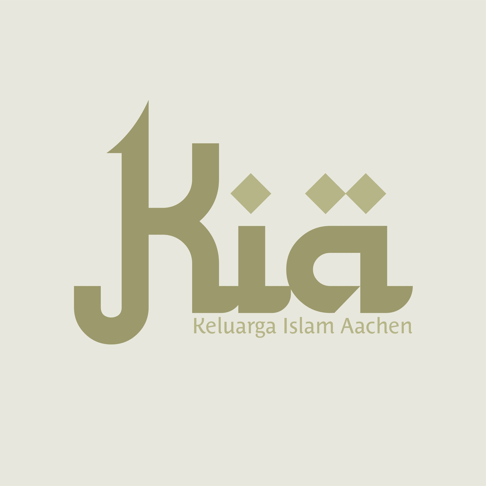
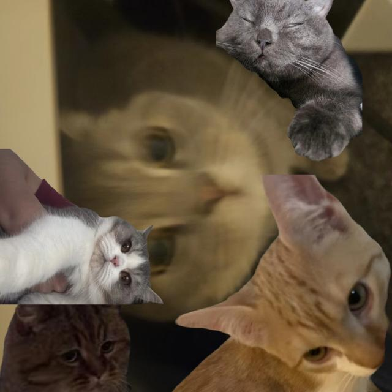
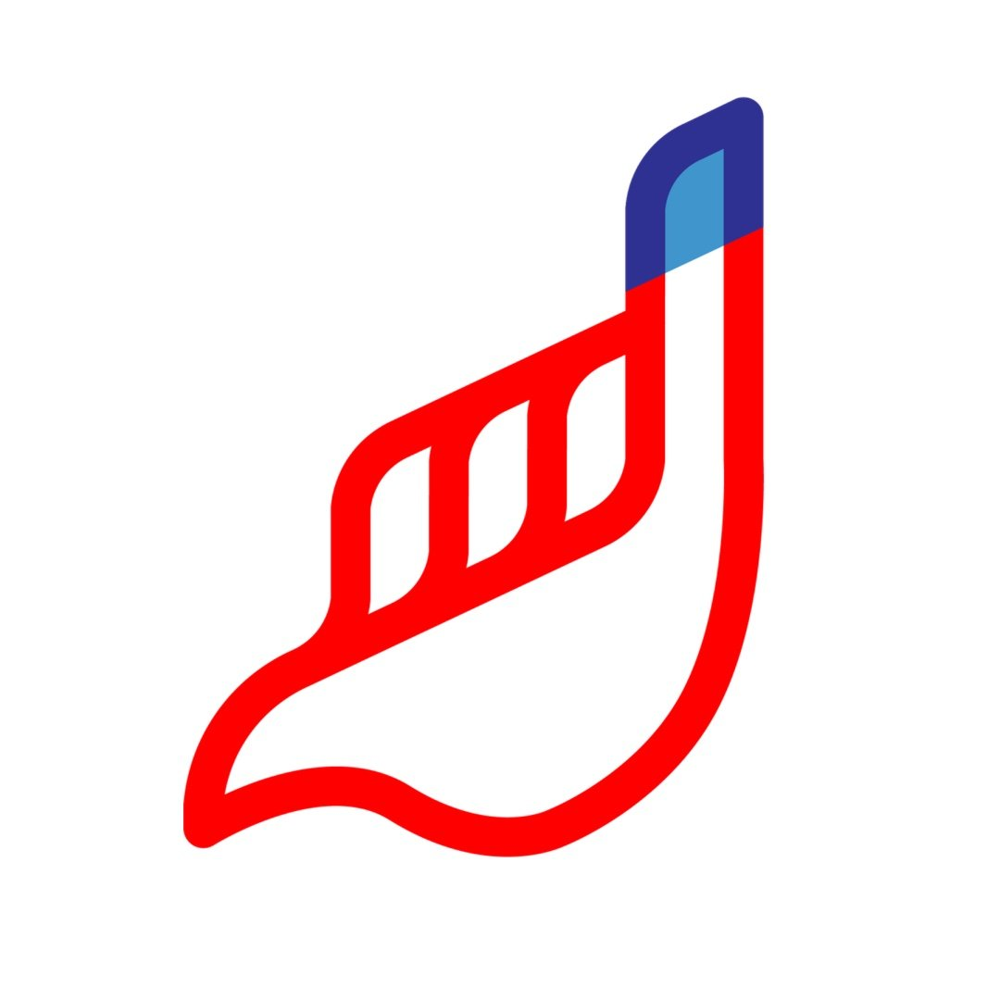

Direktori
Directory
Verzeichnis
 SosialSocialSozial
SosialSocialSozial
 AgamaReligionReligion
AgamaReligionReligion
 AgamaReligionReligion
SosialSocialSozial
AgamaReligionReligion
SosialSocialSozial
 AgamaReligionReligion
AgamaReligionReligion
 PolitikPoliticalPolitik
PolitikPoliticalPolitik
Komunitas di Aachen Communities in Aachen Gemeinschaften in Aachen
Aachen Cekrek
Fotografi & Videografi
SosialSocialSozial
PolitikPoliticalPolitik
AKI
Arbeitskreis Indonesia
☸️
AgamaReligionReligion
KABAR-Aachen
Kalyanamitta Buddhist Association

KIA
Keluarga Islam Aachen
KMKI Rukun Aachen
Keluarga Mahasiswa Katolik Indonesia

KoKuchen
Komunitas Kucing Aachen
PERKI Aachen
Persekutuan Kristen Indonesia
SosialSocialSozial
PolitikPoliticalPolitik
PPI Aachen
Perhimpunan Pelajar Indonesia

Suara Kami
Pergerakan sosial-politik demokrasi